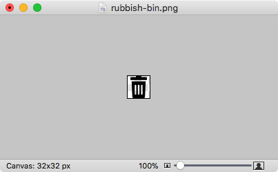
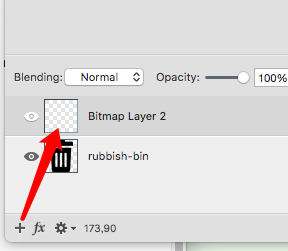
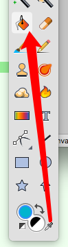
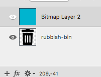
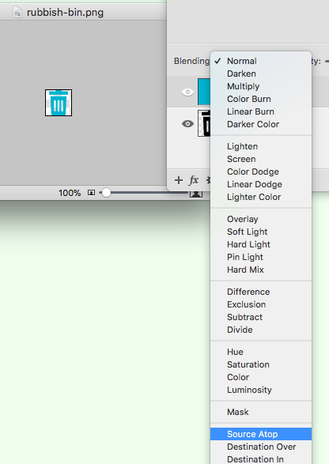

音画处理
修改icon色调
- 用Acorn打开图片。
 - 在其上新建图层。
 - 用选色工具取到颜色，然后用颜料桶填充新建的图层。

 - 选择新图层的Blending模式为Source Atop，大功告成。

录制屏幕声音
- 下载Soundflower https://github.com/mattingalls/Soundflower/releases
- 打开音频MIDI设置，添加“聚集设备”，勾选"Soundflower(2ch)"和"外置耳机",这样在录制的时候耳机也能听到声音。
- 打开系统设置－声音，在输出中选择“聚集设备”；输入选择Soundflower(2ch) 。
- 打开QuickTime Player，新建音频录制，选择“Soundflower(2ch)”，录制